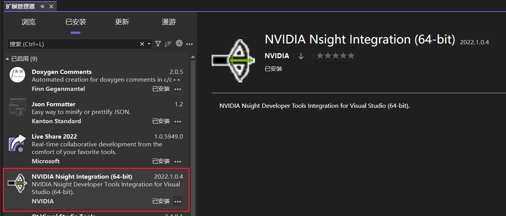

CUDA开发环境的搭建
笔者使用的开发环境是Windows 10 + VS Code。没有选择Linux主要考虑的是除了CUDA开发之外，平时还会涉及机械设计和一些文档的处理，使用Linux的话软件生态上不太适应。并且Windows开发环境目前也基本处于可用的状态，可以满足日常开发和测试的需求。项目实际上线的时候是同事负责进行代码集成。得益于CUDA的跨平台编译能力，我在Windows下测试完成的代码，在Linux下经过简单的处理就可以正常编译和集成。
编译器的安装
NVIDIA提供了针对CUDA程序的编译器nvcc，但是这并不是一个完整的编译器，需要依赖一个C/C++编译器一起才能工作。
Windows下要进行CUDA开发，必须选择MSVC编译器。NVIDIA目前还没有提供针对MinGW的nvcc适配，如果为nvcc选择了gcc编译器，编译的过程会报错。MSVC的版本根据实际部署的环境决定，如果使用的CUDA运行时版本比较高的话，建议选择比较新的编译器。笔者使用的是CUDA 12.4运行时，MSVC版本为2022（17.0）。
安装过程无需多言，直接下载Visual Studio社区版的在线安装器安装即可。
CUDA工具链和驱动的安装
笔者主要聚焦的是加速计算领域，对深度学习没有太多的需求，因此我只安装了CUDA工具链，没有安装CUDNN等针对深度学习而设计的工具。需要注意的是，选择的CUDA工具链的版本和安装的显卡驱动的版本应当匹配。
下载页面上，CUDA版本号之后的这串数字是对应的驱动版本，下载GPU对应的驱动安装即可。目前CUDA已经更新到了12.9版本，所以对应的驱动版本已经比较老了，需要直接搜索驱动的版本号，仍然可以下载到。
安装完成之后需要将nvcc.exe的路径添加到系统的PATH环境变量中。可以先创建下面两个环境变量，
然后将%CUDA_PATH%\bin\添加到PATH环境变量的列表中。
安装完上面的软件和驱动之后，系统中会出现一些工具软件，其中Nsight Compute和Nsight System两个工具对于CUDA程序的性能分析和优化非常有用。
工程管理工具
安装好上面的开发环境之后，还需要一个工程管理工具来实现项目管理。Windows下比较常用的工程管理工具有VS的解决方案和CMake两种。
Visual Studio解决方案
Visual Studio是微软的老牌IDE了，集成了非常强大的功能。但是CUDA C++开发是C++的一个超集，并不是原生的C++，也没有得到Visual Studio的原生支持。并且对于CUDA中最重要的核函数调用语法，无法正常进行变量名称的重构以及函数调用的检查。不推荐使用。
需要注意的是Visual Studio解决方案是一个项目管理工具，尽管我们不使用它，但是仍然需要安装Visual Studio来使用MSVC的编译器。理论上存在不安装Visual Studio而只安装MSVC的方法，但是笔者图省事，就直接完整安装了。
安装了Visual Studio之后还需要安装一个扩展NVIDIA Nsight Integration。

全部安装完成之后，使用Visual Studio创建新工程的时候就可以看到CUDA 12.x Runtime的工程模板了。这里的12.x是安装的CUDA工具链的版本号。当然如果安装的是11.x的版本也是一样。如下图所示。

创建一个新CUDA Runtime工程。解决方案中会自动创建一个kernel.cu源文件。.cu是CUDA C++代码的扩展名。自带的源代码文件中包含了一个main函数和一个向量加法的示例代码。
项目属性中已经默认添加了CUDA运行所需要的静态链接库，基本可以直接进行代码开发。
但是Visual Studio对CUDA C++的语法支持并不完整，无法正确识别核函数调用的语法。一方面会显示语法错误（编译可以正常通过，并且程序可以正常调试和运行），另一方面进行变量名和核函数名重构时不能识别到核函数调用处的变量名和核函数名。给项目的开发带来了一定的困扰。
CMake
CMake是Kit社区开发和维护的一个C++项目管理工具。从3.8版本之后提供了针对CUDA的原生支持，搭配VS Code可以完美支持CUDA C++的全部特性，笔者个人更加喜欢。并且，CMake并不依赖特定的IDE，使用任意的编辑器+命令行即可进行开发。对于使用ssh进行远程开发也更加友好。
CMake对CUDA的支持情况
- 2.8版本，CMake提供了find_package(CUDA REQUIRED)进行CUDA开发的特性。需要手动指定要链接的库。
- 3.8版本，提供了直接指定CUDA作为开发语言的工程管理方法。
- 3.9版本，引入了对MSVC编译器的支持。
- 3.17版本，CMake提供了CUDAToolkit组件。
不同版本之间的区别，和CMake管理工程的细节有关，可以参考CMake工程管理的基本原理。
CMake目前已经发布了4.0.3版本，可以在官网下载安装。笔者使用的是3.31.3版本。
创建一个目录用于保存工程，在根目录下创建一个CMakeLists.txt文件，并在其中添加以下内容。
cmake_minimum_required(VERSION 3.31)
set(CMAKE_CUDA_ARCHITECTURE 86)
set(CMAKE_CUDA_COMPILER "path_to_nvcc")
find_package(CUDAToolkit REQUIRED)
project(HelloCuda VERSION 0.1 LANGUAGES C CUDA)
set(TARGET_NAME ${PROJECT_NAME})
add_executable(${TARGET_NAME} ${PROJECT_SOURCE_DIR}/src/main.cu)
target_link_libraries(${TARGET_NAME} PRIVATE
cudart
)
其中CMake的最低版本不能低于3.9（针对Windows下的CUDA开发）。
关键语句是设置CMAKE_CUDA_ARCHITECTURE和CMAKE_CUDA_COMPILER这两个变量，以及在project语句中使用LANGUAGES关键字声明项目语言为CUDA。当然可以指定多种项目语言，包括C和CXX，实现混合编程。在add_executable语句之后，需要指定需要链接的动态库，常用的链接库可以参考
接下来，就可以按照常规使用CMake的方法来管理工程了。
编辑器
VS Code
目前NVIDIA官方提供了比较强支持的编辑器应当就是VS Code了。一方面开发了Nsight Visual Studio Code Edition插件，另一方面CUDA C++语法也得到了比较全面的支持。再加上VS Code对CMake的支持也非常好，因此非常适合CUDA开发。
安装插件之后只需要按照正常CMake工程进行使用即可（需要安装CMake Tools和C++开发插件包）。
最近AI辅助编程可以说是风生水起，Cursor、Lingma IDE等基于VS Code的编辑器得到了极大的关注，应当也可以正常使用。只是对插件的支持还不完整。
CLion
CLion是一个非常流行的IDE，提供了非常强大的工程管理和调试功能。
如果是在Windows操作系统开发，CLion默认使用的编译器是MinGW，无法实现CUDA代码的编译，需要手动增加Visual Studio编译工具链。
如上图所示，在工具链中选择新增Visual Studio并指定Visual Studio的安装路径即可。如果安装了多个不同版本的VS工具链，可以进一步指定详细的路径。
然后在CMake配置中选择使用相应的工具链即可。剩下的同样是按照正常CMake工程进行开发即可。